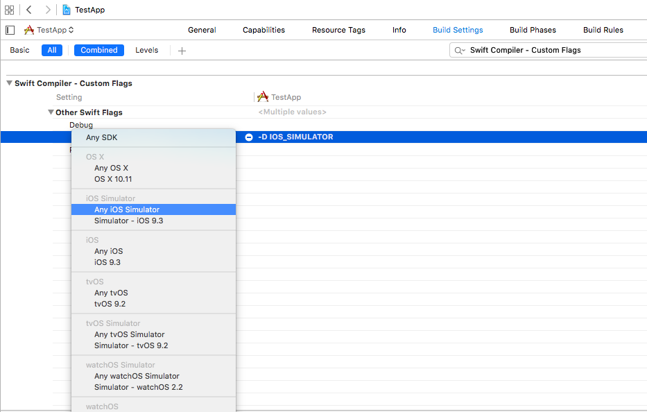

In Objective-C we can know if an app is being built for device or simulator
using macros:
#if TARGET_IPHONE_SIMULATOR
// Simulator
#else
// Device
#endif
These are compile time macros and not available at runtime.
How can I achieve the same in Swift?
Answer
Update 30/01/19
While this answer may work, the recommended solution for a static check (as
clarified by several Apple engineers) is to define a custom compiler flag
targeting iOS Simulators. For detailed instructions on how to do to it, see
@mbelsky's answer.
Original answer
If you need a static check (e.g. not a runtime if/else) you can't detect the
simulator directly, but you can detect iOS on a desktop architecture like
follows
#if (arch(i386) || arch(x86_64)) && os(iOS)
...
#endif
After Swift 4.1 version
Latest use, now directly for all in one condition for all types of
simulators need to apply only one condition -
#if targetEnvironment(simulator)
// your simulator code
#else
// your real device code
#endif
For more clarification, you can check Swift proposal SE-0190
For older version -
Clearly, this is false on a device, but it returns true for the iOS Simulator,
as specified in the documentation:
The arch(i386) build configuration returns true when the code is compiled
for the 32–bit iOS simulator.
If you are developing for a simulator other than iOS, you can simply vary the
os parameter: e.g.
Detect the watchOS simulator
#if (arch(i386) || arch(x86_64)) && os(watchOS)
...
#endif
Detect the tvOS simulator
#if (arch(i386) || arch(x86_64)) && os(tvOS)
...
#endif
Or, even, detect any simulator
#if (arch(i386) || arch(x86_64)) && (os(iOS) || os(watchOS) || os(tvOS))
...
#endif
If you instead are ok with a runtime check, you can inspect the
TARGET_OS_SIMULATOR variable (or TARGET_IPHONE_SIMULATOR in iOS 8 and
below), which is truthy on a simulator.
Please notice that this is different and slightly more limited than using a
preprocessor flag. For instance you won't be able to use it in place where a
if/else is syntactically invalid (e.g. outside of functions scopes).
Say, for example, that you want to have different imports on the device and on
the simulator. This is impossible with a dynamic check, whereas it's trivial
with a static check.
#if (arch(i386) || arch(x86_64)) && os(iOS)
import Foo
#else
import Bar
#endif
Also, since the flag is replaced with a 0 or a 1 by the swift
preprocessor, if you directly use it in a if/else expression the compiler
will raise a warning about unreachable code.
In order to work around this warning, see one of the other answers.
Suggest
OUTDATED FOR SWIFT 4.1. Use #if targetEnvironment(simulator) instead.
Source
To detect simulator in Swift you can use build configuration:
- Define this configuration -D IOS_SIMULATOR in Swift Compiler - Custom Flags > Other Swift Flags
- Select Any iOS Simulator SDK in this drop down 
Now you could use this statement to detect simulator:
#if IOS_SIMULATOR
print("It's an iOS Simulator")
#else
print("It's a device")
#endif
Also you could extend UIDevice class:
extension UIDevice {
var isSimulator: Bool {
#if IOS_SIMULATOR
return true
#else
return false
#endif
}
}
// Example of usage: UIDevice.current.isSimulator